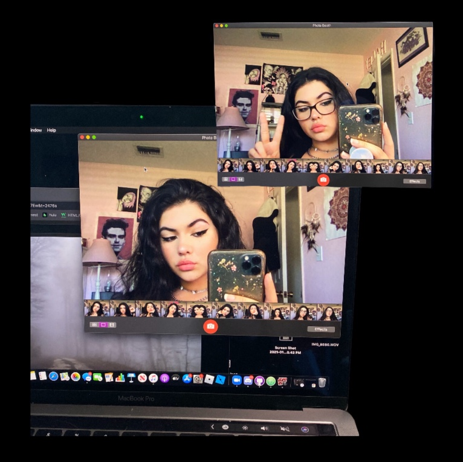

Haley's Hangout
Hi my name is Haley, in all honesty I wish we were allowed to write our names without capitilization all the time because h looks better than H. When it comes to talking about myself, I feel like it's hard to know what to say because I know everything about me. But what parts of myself should I share with others? Yeah, that question serves as a total road block. Anyways, I am 19, a sagittarius, and a mom to a cat and a gecko. I feel like sometimes I come off as cold towards people, it's not intentional at all, I just focus on what I think is important.
I am addicted to reading YA/NA romance and fantasy books, I read at least 100 a year :p Depending on how much homework I have, I typically finish a book a day; reading has somehow became my favorite thing to do in my free time. When I'm in a book slump I typically binge a tv series or rewatch some of my favorites. I sometimes wonder if I have an addictive personality because once I like something I will do/watch/listen/read it repeatedly. My sophomore year of high school I went on independent studies as aftermath of a certain injury, and I would watch John Wick several times a day-- my parents got sick of it.
